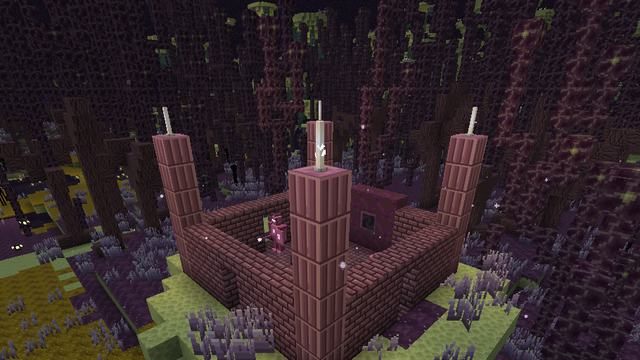
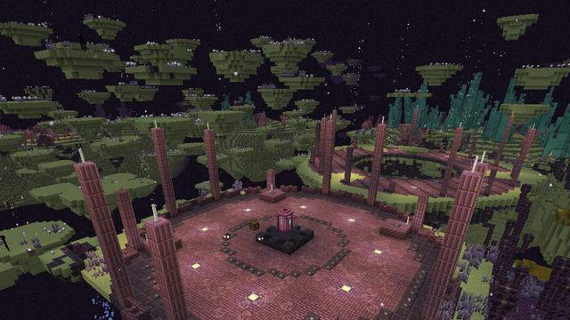
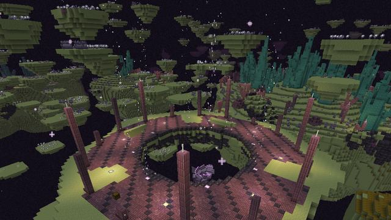
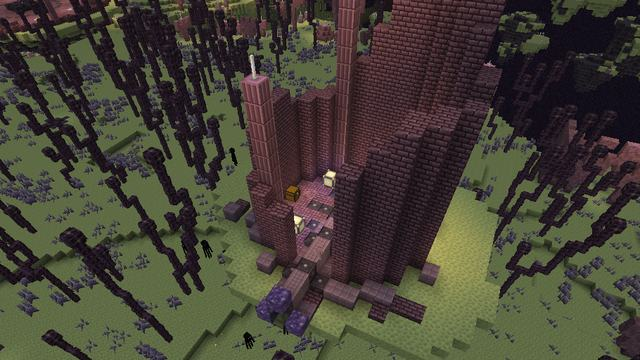
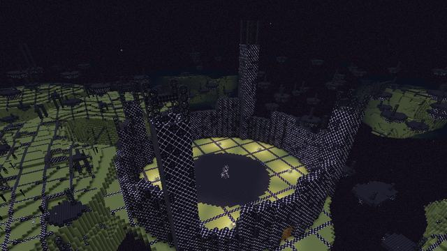

Screenshots
Showcase
Taken in game, with no shaders or texture packs.
 The Resonant Spires' Resonite, Shulker Reef coral beside it
The Resonant Spires' Resonite, Shulker Reef coral beside it Chorus timber and Void Grass in the Chorus Thicket
Chorus timber and Void Grass in the Chorus Thicket Lumen Moss round the void-water pools of the Lumen Mire
Lumen Moss round the void-water pools of the Lumen Mire Ancient Purpur coral in the Shulker Reefs
Ancient Purpur coral in the Shulker Reefs The Voidscar Wastes
The Voidscar Wastes Echo Amber in a Hollow Highlands cavern
Echo Amber in a Hollow Highlands cavern Ender Blooms and Starflowers in Bloom Meadows
Ender Blooms and Starflowers in Bloom Meadows Void Berry vines under a Hanging Gardens islet
Void Berry vines under a Hanging Gardens islet Void Mushrooms in the Void Fungus Barrens
Void Mushrooms in the Void Fungus Barrens Under the Chorus Canopy
Under the Chorus Canopy The Unfinished Edge: raw lattice on the Ancients' grid
The Unfinished Edge: raw lattice on the Ancients' grid The Shattered Rim's broken islands round the main island
The Shattered Rim's broken islands round the main island An Ancient Waystation and its Return Gate
An Ancient Waystation and its Return Gate A Drift Islet's mooring, its posts lit
A Drift Islet's mooring, its posts lit

A Void Shrine

A Shulker Foundry, the Hollow Sentinel's arena

A Rift Maw, its pool open to the void

A Fallen Observatory

An Unfinished Citadel at the Edge A Chorus Weaver's vine finds its mark
A Chorus Weaver's vine finds its mark A Lumen Wisp lighting the way for a player holding Lumen
A Lumen Wisp lighting the way for a player holding Lumen A Rift Stalker, frozen by a straight look
A Rift Stalker, frozen by a straight look A Purpur Sentry with its shield up
A Purpur Sentry with its shield up A Crystal Warden beams; the dragon heals while it does
A Crystal Warden beams; the dragon heals while it does A Lattice Crawler on the lattice
A Lattice Crawler on the lattice The Hollow Sentinel, its shell cracked open
The Hollow Sentinel, its shell cracked open The Void Leviathan rears over the Rift Maw's pool
The Void Leviathan rears over the Rift Maw's pool The Architect raises a lattice wall
The Architect raises a lattice wall The dragon's void breath, left where it dived
The dragon's void breath, left where it dived The Promise Codex: the acts and their goals
The Promise Codex: the acts and their goals A Rift Gate's network of attuned gates
A Rift Gate's network of attuned gates A Void Shrine offers three boons
A Void Shrine offers three boons A void current's motes under the islands
A void current's motes under the islands